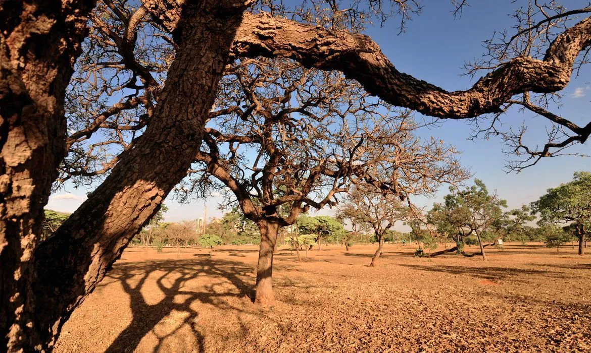
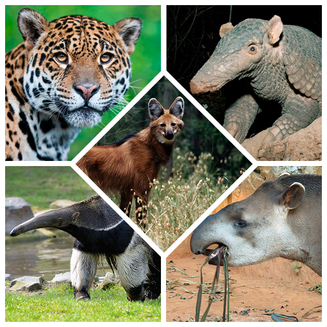
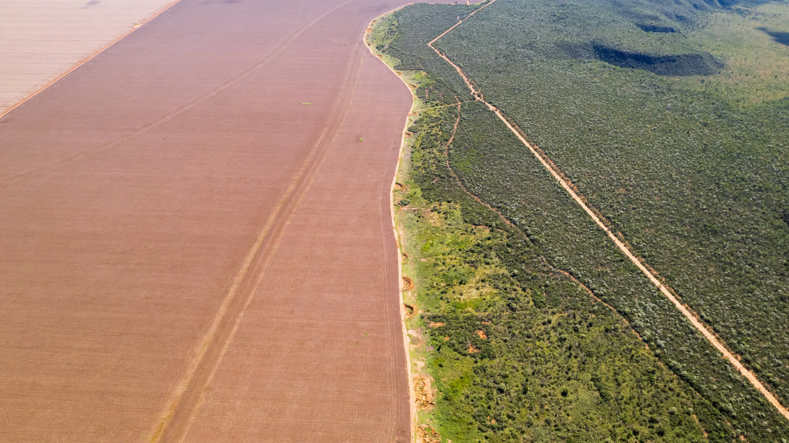
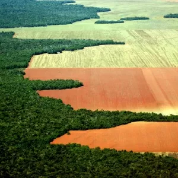

Sobre o Cerrado
O Cerrado é um bioma que ocupa uma grande área no Brasil, representando aproximadamente 22% do território nacional. Ele é caracterizado por uma vegetação que mistura arbustos e árvores de pequeno porte, com grandes áreas cobertas por gramíneas. O clima no Cerrado é tropical, com uma estação seca bem definida e uma estação chuvosa, o que influencia diretamente a vegetação e a fauna que habitam esse ambiente. Apesar de sua aridez, o Cerrado é um dos biomas mais ricos em biodiversidade do planeta, abrigando inúmeras espécies de plantas, animais e microrganismos que não são encontrados em outros lugares do mundo.
Características
A vegetação do Cerrado é muito adaptada às condições climáticas, com árvores que têm raízes profundas para buscar água nas camadas mais profundas do solo. O solo, por ser ácido e de baixa fertilidade, faz com que muitas plantas desenvolvam estratégias de resistência, como a casca grossa e espinhosa. Durante a estação seca, o Cerrado perde grande parte de sua vegetação, mas na época das chuvas, a vegetação se recupera rapidamente, criando um ciclo de regeneração impressionante. O bioma também é rico em cavernas e rios subterrâneos que alimentam grandes bacias hidrográficas, como o Rio São Francisco.
Fauna
O Cerrado abriga uma grande variedade de animais, com muitos deles adaptados ao clima seco e às dificuldades de sobrevivência nesse ambiente. O lobo-guará, o tamanduá-bandeira e o tatu-canastra são apenas alguns exemplos de animais que se destacam por sua capacidade de adaptação. O Cerrado é também um importante local de abrigo para aves como o beija-flor, o cardeal e o nambu, além de ser o lar de várias espécies de répteis e anfíbios. Essa fauna é essencial para a manutenção do equilíbrio ecológico do bioma, mas está ameaçada pela expansão urbana e o desmatamento.
Flora

A flora do Cerrado é composta principalmente por árvores de pequeno porte, como o pequizeiro e o ipê, que são símbolos da vegetação do bioma. Muitas dessas plantas possuem adaptações especiais para resistir às longas secas, como folhas mais finas e cascas mais grossas que ajudam a reduzir a perda de água. Além das árvores, o Cerrado também possui uma grande variedade de arbustos e gramíneas, que florescem durante a estação das chuvas. Algumas plantas possuem frutos comestíveis, como o pequi, que é muito utilizado pela população local. A diversidade de espécies vegetais é tão grande que muitas ainda não foram totalmente estudadas.
Ameaças
O Cerrado enfrenta várias ameaças, principalmente o desmatamento, que é causado pela expansão da agricultura e da pecuária. Esse desmatamento afeta a biodiversidade local, pois destrói habitats naturais de diversas espécies. Além disso, a queima da vegetação para abrir espaço para novas áreas de cultivo também tem causado danos ao bioma. A perda de vegetação no Cerrado também tem impacto na qualidade da água e do solo, afetando não só o bioma em si, mas também as regiões ao redor. A mudança climática é outra grande ameaça, pois pode alterar o padrão de chuvas e agravar as condições já difíceis de sobrevivência para a fauna e flora locais.
Diversidade
A biodiversidade do Cerrado é uma das maiores do mundo, com milhares de espécies de plantas, animais e microrganismos, muitos dos quais não são encontrados em nenhum outro lugar. Além de ser um dos biomas mais ricos em diversidade, o Cerrado é também considerado um hotspot de biodiversidade, ou seja, uma região com uma enorme concentração de espécies ameaçadas de extinção. A diversidade genética do Cerrado é fundamental para a preservação da saúde ecológica da região e para a manutenção de várias cadeias alimentares que dependem do equilíbrio natural do bioma.
Saberes e Tecnologias Sociais
Os povos tradicionais que habitam o Cerrado têm um conhecimento profundo sobre o bioma e suas características. Esse saber é transmitido de geração para geração e tem sido fundamental para a preservação do ambiente. Além disso, as tecnologias sociais desenvolvidas por essas comunidades têm ajudado a combater os impactos ambientais, como a desertificação e o desmatamento. As técnicas de manejo sustentável da terra, como a agricultura de baixo impacto, têm mostrado que é possível conviver de forma harmoniosa com o Cerrado e garantir que os recursos naturais sejam utilizados de maneira responsável.
Ocupação e Utilização Econômica
Impactos Econômicos
A agricultura e a pecuária são as principais atividades econômicas no Cerrado, sendo responsáveis por grande parte da produção de grãos, como soja e milho, além da criação de gado. No entanto, essas atividades têm causado danos significativos ao ecossistema, como o desmatamento de grandes áreas para a expansão das lavouras e pastagens. A conversão do Cerrado em áreas agrícolas também tem levado à perda de habitats naturais e à diminuição da biodiversidade.
Impactos Sociais
As populações locais, muitas vezes compostas por comunidades indígenas e quilombolas, enfrentam sérios desafios com a perda de territórios e a degradação ambiental causada pelo uso intensivo do solo. A pressão econômica para transformar o Cerrado em áreas agrícolas tem levado à expulsão de moradores tradicionais e à deterioração das condições de vida dessas comunidades. Além disso, a destruição do bioma compromete os serviços ecossistêmicos essenciais, como a produção de água e a manutenção da qualidade do ar.
Características Detalhadas
| Aspecto | Descrição |
|---|---|
| Solo | O solo do Cerrado é ácido e pobre em nutrientes, o que dificulta o crescimento de muitas plantas. No entanto, ele é rico em biodiversidade microbiana, o que permite a decomposição de matéria orgânica e a reciclagem de nutrientes. A composição do solo varia de acordo com a região, sendo mais arenoso nas áreas mais planas e mais argiloso em algumas áreas de relevo mais acentuado. |
| Clima | O Cerrado apresenta um clima tropical sazonal, com uma estação seca prolongada e uma estação chuvosa bem definida. Durante a estação seca, as temperaturas podem ser muito altas, chegando a mais de 40°C, enquanto nas chuvas, as temperaturas são mais amenas e as chuvas podem ser intensas, mas em menor duração. A diferença entre as estações influencia diretamente na vegetação e na fauna, que têm adaptações para sobreviver a essas condições. |
| Relevo | O relevo do Cerrado é bastante diversificado, com grandes chapadas e planaltos, além de vales profundos. Essas chapadas, que são planícies de altitudes elevadas, são formadas por rochas antigas, e seus vales abrigam rios que drenam as águas das áreas mais altas. O relevo acidentado e as grandes áreas abertas favorecem a presença de espécies vegetais adaptadas a essas condições, com raízes profundas e folhas resistentes. |
| Hidrografia | A hidrografia do Cerrado é extremamente importante, pois ele é a fonte de muitos dos grandes rios do Brasil, como o Tocantins, o São Francisco, o Araguaia e o Paraná. Esses rios são essenciais para a irrigação de várias regiões do país e para a produção de energia hidrelétrica. As águas do Cerrado também abastecem a agricultura e as populações locais, além de manterem a biodiversidade aquática. A água presente nas nascentes do Cerrado é crucial para outros biomas, como a Amazônia e o Pantanal. |